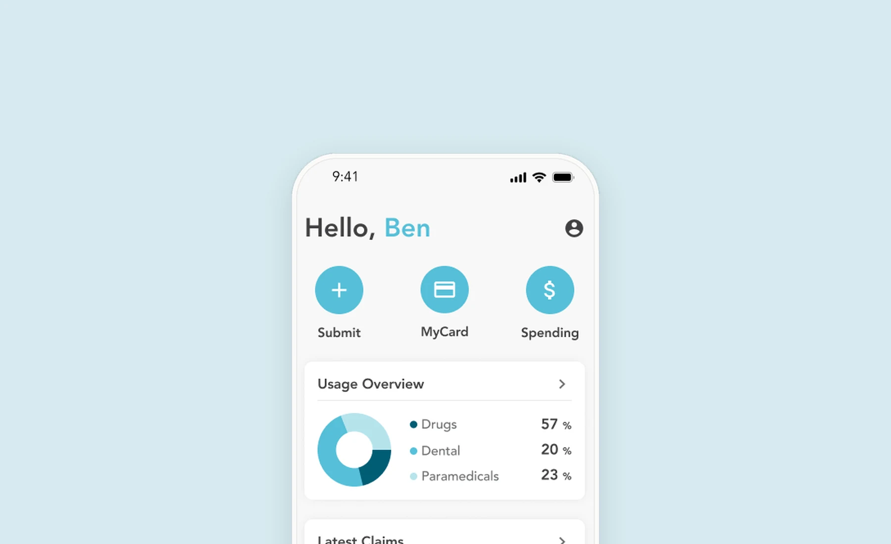
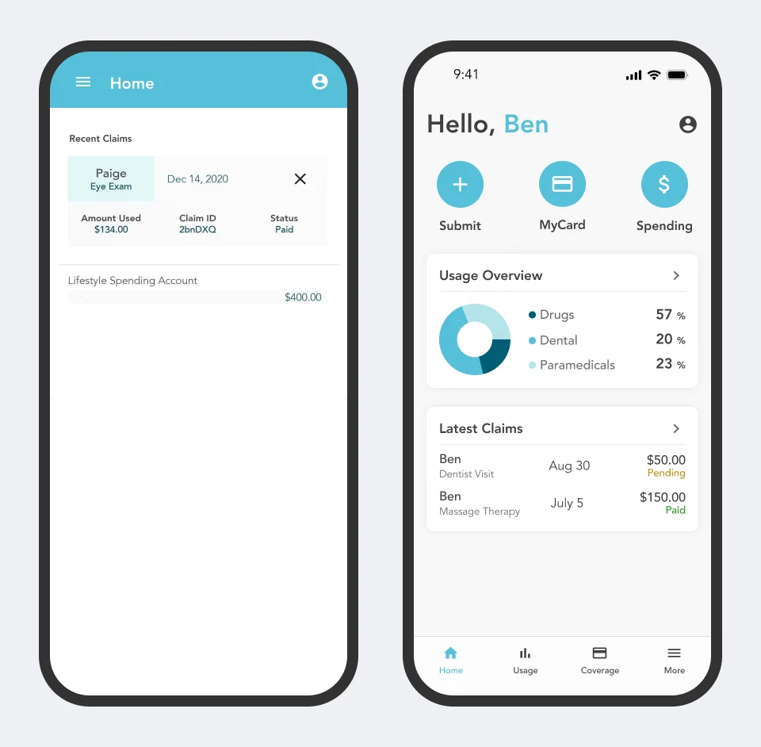
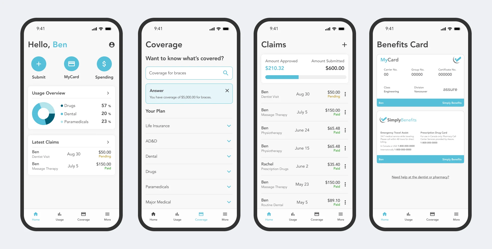
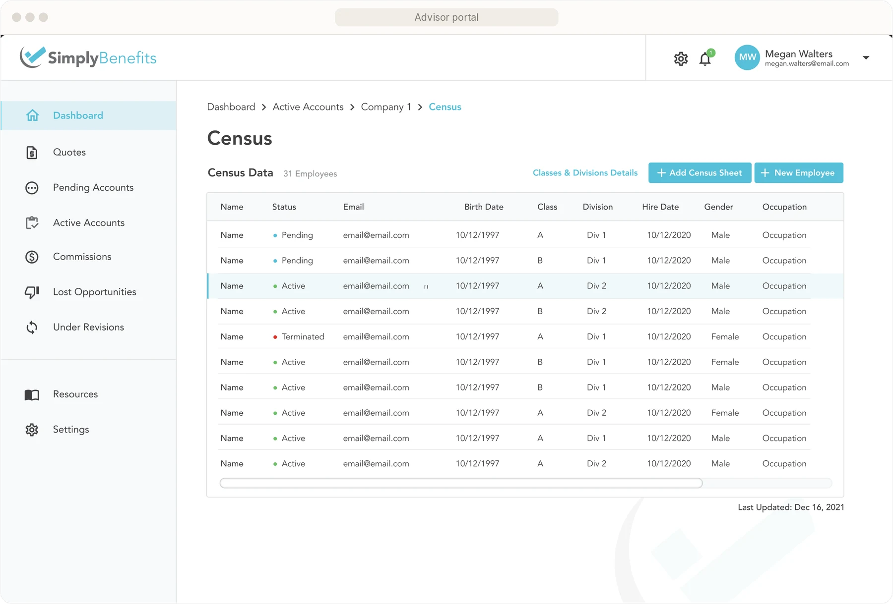
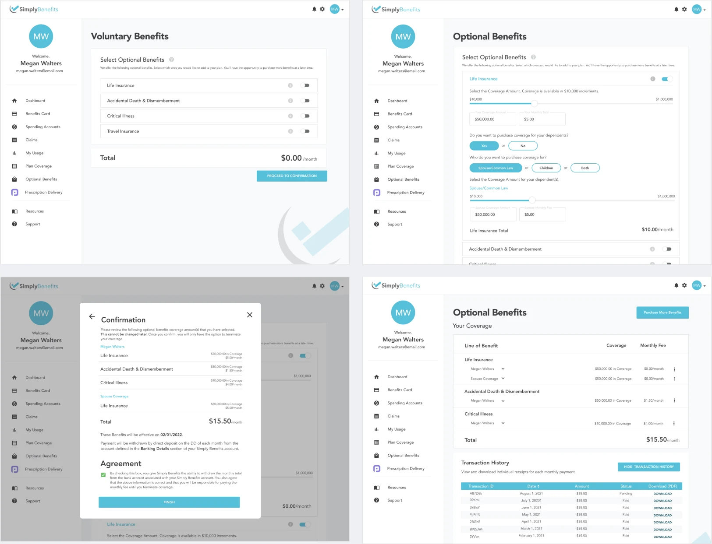
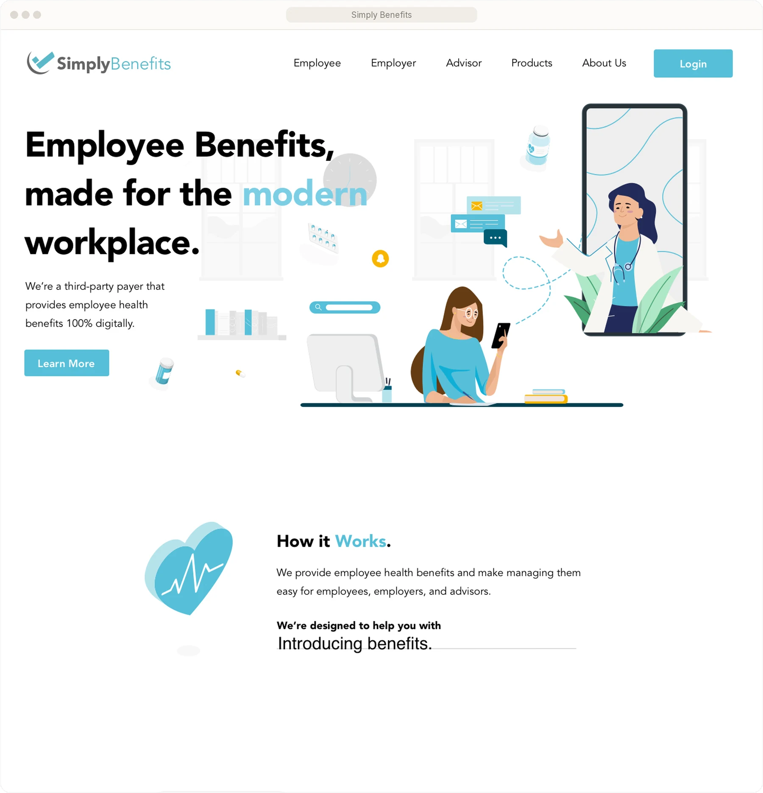

Simply Benefits — HR tech
The sole designer on a benefits platform for members, employers and advisors
One member app, three web portals and a public site, and one designer. I owned all of it, from the first research to the shipped UI.

Overview
My first full-time design role, and the whole product to design.
I joined Simply Benefits full-time in April 2021, after a one-year internship. As the only designer, I established the design practice and was in charge of every product from start to finish. It’s where I became confident leading projects, making product decisions and delivering polished UI.
more member app downloads after the redesign, and 20% more updates.
more sign-ups, after I rebuilt the sign-up flow.
to quote a group digitally, down from the industry’s 4–6 weeks.
Member app
A complete overhaul of an app members rely on, which hadn’t been updated in a year or two.
Members use the app to submit claims, view their usage, look up their coverage and more, so it’s central to their experience. It hadn’t been updated in a year or two. I led the redesign: research, ideation and UX/UI.
Goals
Make claims faster to submit. Help members understand their coverage. Clearly show what they’ve used and what’s left. Modernize an outdated UI.
Solutions
A dashboard that shows what members would otherwise go looking for: latest claims, recent usage, and a plus button to submit a claim. Usage bars on claims and spending accounts show what’s spent and what’s left.

The results
App downloads grew 163% and updates 20%. Members who’d never used the app downloaded it, and existing users were excited to update. Our customer success team heard a lot of great feedback about the new design.

Web portals
Three web apps for three very different users: advisors, employers and employees.
As the design lead on the portals, I handled maintenance, optimizations and new features, often in dense, data-heavy workflows.

Digital advisor quoting
One of the platform’s most impressive features lets advisors quote groups entirely digitally, cutting the industry’s usual 4–6 week turnaround to about 5 days. But the old version was outdated, confusing and clunky, with no clear step-by-step process, so advisors weren’t using it.
I helped reorganize the back-end structure and flow, and designed a clear, concise UI to go with it. After launch, digital quote creation went up.
Voluntary Benefits
Optional, fully digital add-on benefits that employees can buy for themselves. It improves their insurance experience and gives the company a new revenue stream. I designed it from start to finish, from research and wireframes to polished UI, and tested the prototype with users to improve the flow.
It launched in 2024, after I’d moved on, and I heard from my old colleagues about how well it was received.

Website
A redesigned public site that I also built, in React.
I worked with the Brand and Marketing Manager to redesign the public site around the brand mission, with descriptive visuals and a simple layout. We designed six pages, and then I built the front end in React.
lower bounce rate
longer sessions

Reflection
What I learned
Leading a redesign of an app so early in my career was intimidating, but rewarding.
Being the only designer meant every decision was mine to make and to defend. That’s where I learned to lead projects, not just design them.
More work
Archive →